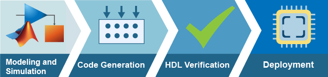

FPGA, ASIC, and SoC Development
Use MATLAB® and Simulink® to develop prototype and production applications for deployment on FPGA, ASIC, and SoC devices. With MATLAB and Simulink, you can:
Model and simulate digital, analog, and software together at a high-level of abstraction.
Convert to fixed point using automated guidance, or generate native floating-point operations for any target device.
Analyze hardware and software architectures by modeling memories, buses, and I/Os.
Generate optimized, readable, and traceable VHDL®, Verilog®, or SystemVerilog for implementation in digital logic.
Generate processor-optimized C/C++ code to target embedded processors.
Verify your algorithm running in an HDL simulator or on an FPGA or SoC device connected to your MATLAB or Simulink test bench.

Products for FPGA, ASIC, and SoC Development
Topics
Modeling and Simulation
- Use Simulink Templates for HDL Code Generation (HDL Coder)
Use Simulink model templates for HDL code generation to create efficient hardware designs. - Transmit and Receive Tone Using AMD RFSoC Device - Part 1 System Design (SoC Blockset)
Design and simulate data path using SoC Blockset™ on Xilinx® RFSoC device. - Wireless Communications Design for ASICs, FPGAs, and SoCs (HDL Coder)
Design wireless communication algorithms for hardware by using Wireless HDL Toolbox™ blocks. - Implement Digital Downconverter for FPGA (DSP HDL Toolbox)
Design a digital downconverter (DDC) for LTE on FPGAs. - HDL OFDM Receiver (Wireless HDL Toolbox)
Implement OFDM-based wireless receiver optimized for hardware. - Convert MATLAB Vision Algorithm to Hardware-Targeted Simulink Model (Vision HDL Toolbox)
Create a hardware-targeted design in Simulink that implements the same behavior as a MATLAB reference design.
Verification
- Get Started with Simulink HDL Cosimulation (HDL Verifier)
Set up an HDL Verifier™ application using the Cosimulation Wizard in the Simulink® environment. - FPGA-in-the-Loop Simulation (HDL Verifier)
FPGA-in-the-loop (FIL) simulation provides the capability to use Simulink or MATLAB software for testing designs in real hardware for any existing HDL code. - Data Capture Workflow (HDL Verifier)
Capture signal data from a design running on an FPGA. - Access FPGA Memory Using JTAG-Based AXI Manager (HDL Verifier)
Use JTAG-based AXI manager to access memories connected to an FPGA. - UVM Component Generation Overview (HDL Verifier)
Generate a Universal Verification Methodology (UVM) environment from a Simulink model. - Generate SystemVerilog DPI Component (HDL Verifier)
Generate a DPI component from Simulink, and explore various configuration parameters. - Verify Generated Code Using HDL Test Bench from Configuration Parameters (HDL Coder)
Generate a HDL test bench to simulate and verify the generated HDL code for your design.
Code Generation and Deployment
- Basic HDL Code Generation Workflow (HDL Coder)
Follow the workflow for HDL code generation and FPGA synthesis from MATLAB and Simulink algorithms. - Generate IP Core with AXI-Stream Interface (HDL Coder)
Use the AXI4-Stream interface to enable high speed data transfer between the processor and FPGA on Zynq® hardware. - Custom IP Core Generation (HDL Coder)
Generate a custom IP core from a model or algorithm using the HDL Workflow Advisor. - Targeting FPGA & SoC Hardware Overview (HDL Coder)
High-level steps for targeting an FPGA or SoC platform. - Transmit and Receive Tone Using AMD RFSoC Device - Part 2 Deployment (SoC Blockset)
Implement and verify design using SoC Blockset on Xilinx RFSoC device. - Prototype Deep Learning Networks on FPGA and SoC Devices (Deep Learning HDL Toolbox)
Accelerate the prototyping, deployment, design verification, and iteration of your custom deep learning network running on a fixed bitstream by using thedlhdl.Workflowobject.
Featured Examples

Streaming Data from Hardware to Software
A systematic approach to design the data-path between hardware logic (FPGA) and embedded processor using SoC Blockset™.

Verify HDL Implementation of PID Controller Using FPGA-in-the-Loop
Set up an FPGA-in-the-Loop (FIL) application using HDL Verifier™.

Deploy and Verify YOLO v2 Vehicle Detector on FPGA
Deploy a you only look once (YOLO) v2 vehicle detector on FPGA and verify the end-to-end application using MATLAB.

Field-Oriented Control of a Permanent Magnet Synchronous Machine
Generate HDL code for a Field-Oriented Control (FOC) algorithm for a Permanent Magnet Synchronous Machine (PMSM).

5G NR SIB1 Recovery Using Analog Devices AD9361/AD9364
Deploy a hardware-software co-design implementation of a SIB1 recovery algorithm for off-the-air 5G NR waveforms.

Verify 5G Wireless Applications Using SystemVerilog DPI
Use SystemVerilog DPI components to verify 5G wireless applications in an HDL environment.